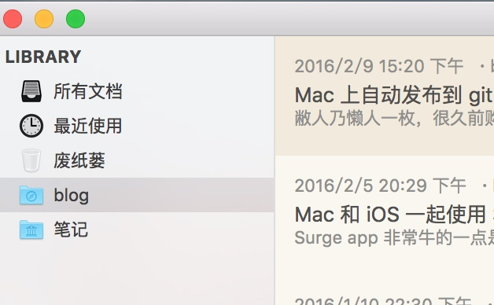

敝人乃懒人一枚，很久前购买了 myweb ，用来记点纯文本的笔记，偶尔发个 blog 到 github pages (github.io)。但是 myweb 是个 GUI 工具，发布到 github要换到 iTerm里自己输入命令 git add && git commit ，非常的麻烦，所以就又一次偷懒写了一个烂脚本，原则上适合用于所有的 app 自动发布到 GitHub。
首先， 我的 mweb 发布到 Github 的文件夹是 blog，如下图所示：

然后生成的网站目录在 /Users/bao3/Library/Containers/com.coderforart.MWeb/Data/Documents/MWeb/LocalData/Site/blog/ ，所以我的目标就是每次文件有变化时，就自动将文章发布到 github ，记住，重点是 “有变化时” 而不是每隔几分钟。
其次，我们需要用到 fswatch 这个命令，这需要使用 brew install fswatch
最后，可选的一个 Shell 命令是 Proxychains4-ng ，这个东西的主要用途是为 git 命令添加代理，以防止网络质量不佳。要使用这个命令就需要有一个 Socks 代理，如果你没有，就不要安装了，而我自己有一个 shadowsocks ，所以非常方便。
然后开始写我们的脚本吧：
#!/bin/bash
#$wdir is where your github blog dir
wdir=/Users/bao3/Library/Containers/com.coderforart.MWeb/Data/Documents/MWeb/LocalData/Site/blog/
export cmd=/usr/bin/git
#locate the 'fswatch' command ,you should install it via "brew install fswatch"
export fsdog=`which fswatch`
export proxy=`which proxychains4`
args="$wdir"
function gitpush() {
$cmd add . ;
reslut=$($cmd commit -a -m "`date`" | grep nothing)
#when get $result length == zero ,means that there is new modified blog ,just git push in next!
if [ -z `$reslut` ] ; then
#Note : proxychains4 is a proxy tools which would let "git " use your proxy ( shadowsocks e.g.),just brew install it ;
`$proxy -q $cmd push -q`;
fi;
return 0;
}
cd $wdir;
#gitpush ;
export -f gitpush;
$fsdog $args | xargs -n6 bash -c 'gitpush'
如果你没有 proxychains4 ，那么以上代码中
$proxy -q $cmd push -q需要换成$cmd push -q
这段脚本实现的功能如下：
- 使用 fswatch 实时 检测 myweb 的 blog 目录
- 一旦发现有新的博客文章，则会自动提交，并添加当时的时间为标记
- 似乎有 bug，因此需要重新生成整个网站文章才会触发提交。